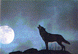
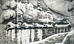
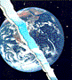
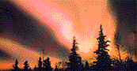
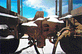
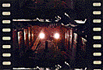
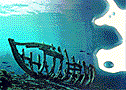
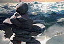
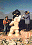

Test For Echo
Released September 10, 1996
Atlantic/Anthem
Produced by Rush and Peter Collins
Time/Songs:
(5:56) Test For Echo
(4:27) Driven
(3:43) Half The World
(4:49) The Color Of Right
(5:01) Time And Motion
(4:58) Totem
(4:55) Dog Years
(5:44) Virtuality
(4:24) Resist
(5:29) Limbo
(4:05) Carve Away The Stone
Album Extras
- Test For Echo Guidebook by Neil Peart
Test For Echo World Album Premiere (RealAudio or text)
Test For Echo TV spot
Ad for Test For Echo from the October issue of
High Times.
"Test For Echo"

Test For Echo
---- --- ----
Here we go -- vertigo
Video vertigo
Test for echo
Here we go -- in slo-mo
Video vertigo
Test for echo
Some kind of trouble on the sensory screen
Camera curves over caved-in cop cars
Bleacher-creatures, would-be desperados
Clutch at plausible deniability
Don't touch that dial --
We're in denial
Until the showcase trial on TV
Some kind of pictures on the sense o'clock news
Miles of yellow tape -- silhouetted chalklines
Tough-talking hood boys in pro-team logo knock-offs
Conform to uniforms of some corporate entity
Don't change that station
It's Gangster Nation
Now crime's in syndication on TV
What a show -- vertigo
Video vertigo
Test for echo
Touch and go -- in slo-mo
Video vertigo
Test for echo
Some kind of drama live on satellite
Hidden camera coverage from the crime scene to the courtroom
Nail-biting hood boys in borrowed ties and jackets
Clutching at the straws of respectability
Can't do the time?
Don't do the crime
And wind up in the perp walk on TV
"Driven"

Driven
------
Driven up and down in circles
Skidding down a road of black ice
Staring in and out storm windows
Driven to a fool's paradise
BUT IT'S MY TURN TO DRIVE
Driven to the margin of error
Driven to the edge of control
Driven to the margin of terror
Driven to the edge of a deep, dark hole
Driven day and night in circles
Spinning like a whirlwind of leaves
Stealing in and out back alleys
Driven to another den of thieves
BUT IT'S MY TURN TO DRIVE
Driven in -- Driven to the edge
Driven out -- On the thin end of the wedge
Driven off -- By things I've never seen
Driven on -- By the road to somewhere I've never been
IT'S MY TURN TO DRIVE
The road unwinds towards me
What was there is gone
The road unwinds before me
And I go riding on
"Half The World"

Half The World
---- --- -----
Half the world hates
What half the world does every day
Half the world waits
While half gets on with it anyway
Half the world lives
Half the world makes
Half the world gives
While the other half takes
Half the world is
Half the world was
Half the world thinks
While the other half does
Half the world talks
With half a mind on what they say
Half the world walks
With half a mind to run away
Half the world lies
Half the world learns
Half the world flies
As half the world turns
Half the world cries
Half the world laughs
Half the world tries
To be the other half
Half of us divided
Like a torn-up photograph
Half of us are trying
To reach the other half
Half the world cares
While half the world is wasting the day
Half the world shares
While half the world is stealing away
"The Color Of Right"

The Color Of Right
--- ----- -- -----
I don't have an explanation
For another lonely night
I just feel this sense of mission
And the sense of what is right
Take it easy on my now --
I'd be there if I could
I'm so full of what is right
I can't see what is good
It's a hopeless situation
Lie awake for half the night
You're not sure what's going on here
But you're sure it isn't right
Make it easy on yourself
There's nothing more you can do
You're so full of what is right
You can't see what is true
A quality of justice
A quantity of light
A particle of mercy
Makes the color of right
Gravity and distance
Change the passage of light
Gravity and distance
Change the color of right
"Time And Motion"

Time And Motion
---- --- ------
Time and motion
Wind and sun and rain
Days connect like boxcars in a train
Fill them up with precious cargo
Squeeze in all that you can find
Spontaneous elation
And the long-enduring kind
Time and motion
Flesh and blood and fire
Lives connect in webs of gold and razor wire
Spin a thread of precious contact
Squeeze in all that you can find
Spontaneous relations
And the long-enduring kind
The mighty ocean
Dances with the moon
The silent forest
Echoes with the loon
Time and motion
Live and love and dream
Eyes connect like interstellar beams
Superman in Supernature
Needs all the comfort he can find
Spontaneous emotion
And the long enduring kind
"Totem"

Totem
-----
I've got twelve disciples and a Buddha smile
The Garden of Allah, Viking Valhalla
A miracle once in a while
I've got a pantheon of animals in a pagan soul
Vishnu and Gaia -- Aztec and Maya
Dance around my totem pole
I believe in what I see
I believe in what I hear
I believe that what I'm feeling
Changes how the world appears
Angels and demons dancing in my head
Lunatics and monsters underneath my bed
Media messiahs preying on my fears
Pop culture prophets playing in my ears
I've got celestial mechanics
To synchronize my stars
Seasonal migrations -- daily variations
World of the unlikely and bizarre
I've got idols and icons, unspoken holy vows
Thoughts to keep well-hidden --
Sacred and forbidden
Free to browse among the holy cows
That's why I believe
Angels and demons inside of me
Saviors and Satans all around me
Sweet chariot, swing low, coming for me
"Dog Years"
Dog Years
--- -----
In a dog's life
A year is really more like seven
And all too soon a canine
Will be chasing cars in doggie heaven
It seems to me
As we make our own few circles 'round the sun
We get it backwards
And our seven years go by like one
Dog years -- It's the season of the itch
Dog years -- With every scratch it reappears
In the dog days
People look to Sirius
Dogs cry for the moon
But those connections are mysterious
It seems to me
While it's true that every dog will have his day
When all the bones are buried
There is barely time to go outside and play
Dog years -- It's the season of the itch
Dog years -- With every scratch it reappears
Dog years -- For every sad son of a bitch
Dog years -- With his tail between his ears
I'd rather be a tortoise from Galapagos
Or a span of geological time
Than be living in these dog years
In a dog's brain
A constant buzz of low-level static
One sniff at the hydrant
And the answer is automatic
It seems to me
As well make our own few circles 'round the block
We've lost our senses
For the higher-level static of talk
"Virtuality"

Virtuality
----------
Like a shipwrecked mariner adrift on an unknown sea
Clinging to the wreckage of the lost ship Fantasy
I'm a castaway, stranded in a desolate land
I can see the footprints in the virtual sand
Net boy, net girl
Send your signal 'round the world
Let your fingers walk and talk
And set you free
Net boy, net girl
Send your impulse 'round the world
Put your message in a modem
And throw it in the Cyber Sea
Astronauts in the weightlessness of pixellated space
Exchange graffiti with a disembodied race
I can save the universe in a grain of sand
I can hold the future in my virtual hand
Let's dance tonight
To a virtual song
Press this key
And you can play along
Let's fly tonight
On our virtual wings
Press this key
To see amazing things
Like a pair of vagabonds who wave between two passing trains
Or the glimpse of a woman's smile through a window in the rain
I can smell her perfume, I can taste her lips
I can feel the voltage from her fingertips
Net boy, net girl
Send your heartbeat round the world
"Resist"

Resist
------
I can learn to resist
Anything but temptation
I can learn to co-exist
With anything but pain
I can learn to compromise
Anything but my desires
I can learn to get along
With all the things I can't explain
I can learn to resist
Anything but frustration
I can learn to persist
With anything but aiming low
I can learn to close my eyes
To anything but injustice
I can learn to get along
With all the things I don't know
You can surrender
Without a prayer
But never really pray
Pray without surrender
You can fight
Without ever winning
But never ever win
Without a fight
"Limbo"
Instrumental
"Carve Away The Stone"

Carve Away The Stone
----- ---- --- -----
You can roll that stone
To the top of the hill
Drag your ball and chain
Behind you
You can carry that weight
With an iron will
Or let the pain remain
Behind you
Chip away the stone
(Sisyphus)
Chip away the stone
Make the burden lighter
If you must roll that rock alone
You can drive those wheels
To the end of the road
You will still find the past right
Behind you
Try to deny
The weight of the load
Try to put the sins of the past night
Behind you
Carve away the stone
(Sisyhpus)
Carve away the stone
Make a graven image
With some features of your own
You call roll the stone
To the top of the hill
You can carry that weight
With an iron will
You can drive those wheels
To the end of the road
You can try to deny
The weight of the load
Roll away the stone
(Sisyhpus)
Roll away the stone
If you could just move yours
I could get working on my own